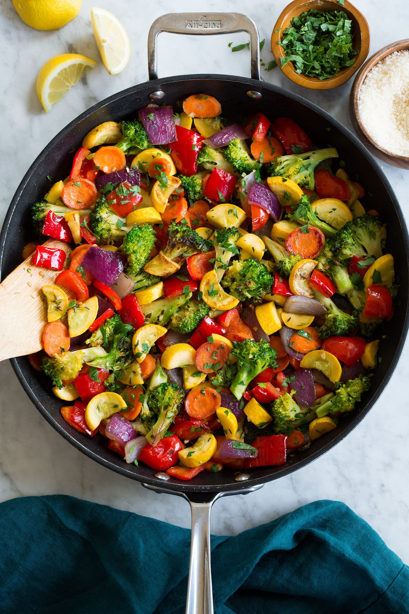

Mixed Vegetables

Sauteed Mixed Veggies
A very healthy veggie medley that tastes so good
Ingredients
- 1/4 cup olive oil
- 2 large sweet potatoes, sliced
- 4 red potatoes, cubed
- 1 large onion, sliced into rings
- 1 teaspoon minced garlic
- 2 green bell peppers, sliced
- 2 red bell peppers, sliced
- 2 carrots, shredded
- 1/4 cup italian-style seasoning
Cooking Steps
- Preheat oven to 350 degrees F (175 degrees C)
- Coat the bottom of a 9x13 inch baking dish with oil. Spread sweet potatoes on the bottom, then top with red potatoes, onion, garlic, green bell peppers, red bell peppers and carrots. Sprinkle seasoning generously over all and cover dish with aluminum foil.
- Bake at 350 degrees F 1 1/2 hours or until potatoes are cooked through and tender; remove foil cover and stir.
- Change oven temperature to 425 degrees F (220 degrees C) and bake mixture in oven for another 1/2 hour, or until browned on top.